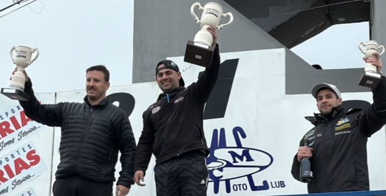

Oliver sumó otra victoria y sigue firme en el campeonato

La sexta fecha del Turismo Carretera Patagónico se disputó en el Autódromo General San Martín con un parque de ocho autos en pista y una lucha que, aunque reducida en cantidad, tuvo un gran nivel de competencia.
En clasificación, el más rápido fue Axel Oliver, escoltado por Marcos Laudonio y Emiliano López. El top 8 lo completaron: Tomás Oliver (4º), Sebastián Gatica (5º), Daniel Laudonio (6º), Cristian Trupiano (7º) y Julio Sosa (8º).
La serie única quedó también en manos de Axel Oliver, seguido por Marcos Laudonio y Emiliano López. En la final, el desarrollo volvió a mostrar la solidez de Oliver, quien se impuso con autoridad, manteniendo el liderazgo en pista y sumando puntos clave para el campeonato. El podio lo completaron Emiliano López (2º) y Marcos Laudonio (3º). Con estos resultados, el campeonato 2025 se mantiene con Axel Oliver en la cima, seguido por Emiliano López y Marcos Laudonio, quienes también fueron los protagonistas del podio de la fecha.
La próxima cita será doble en el Autódromo Mar y Valle de Trelew, los días 12, 13 y 14 de septiembre, con la disputa de las fechas 7 y 8, que pueden definir el rumbo del campeonato.